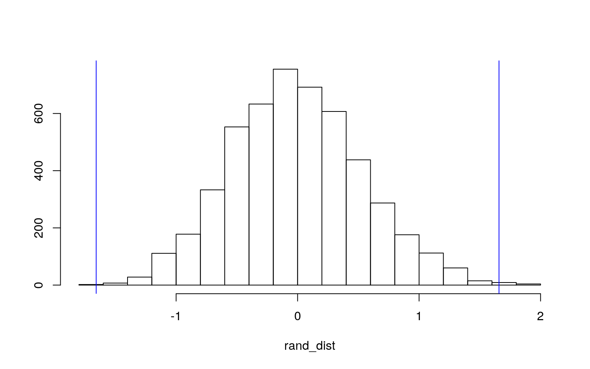
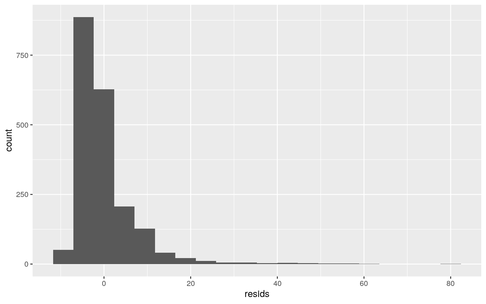
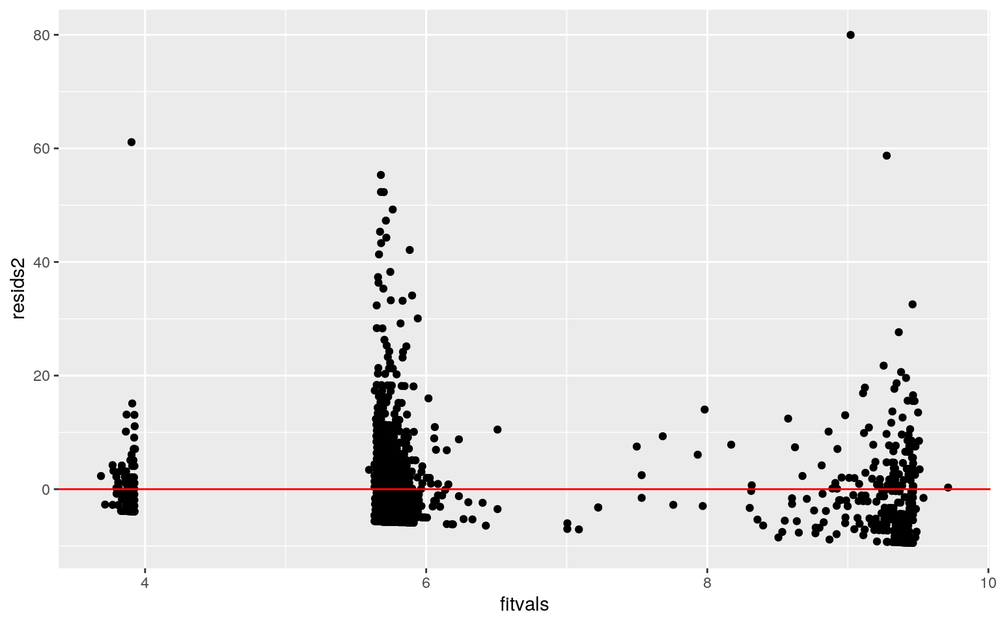
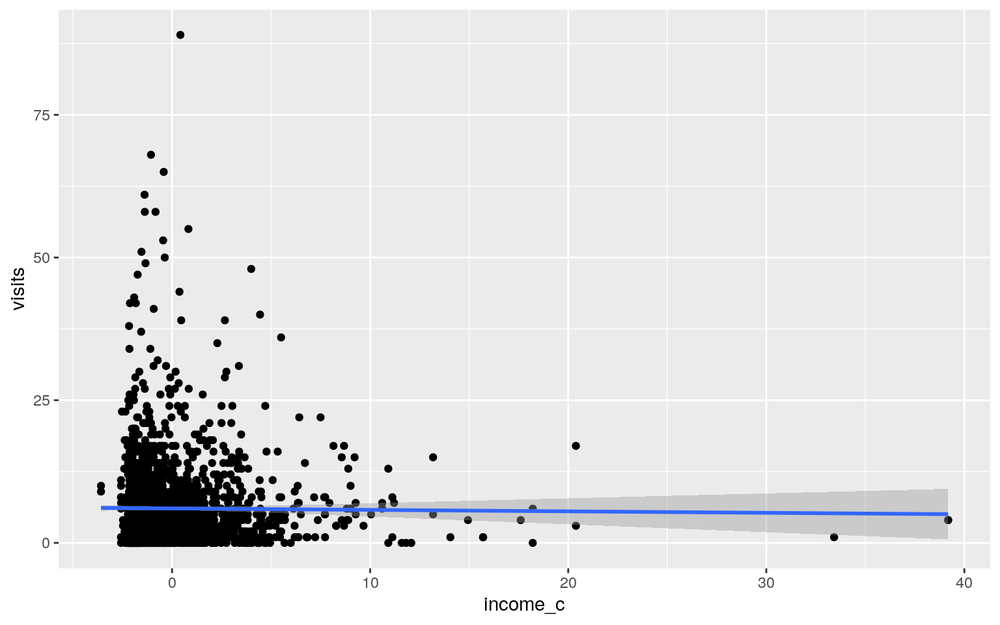
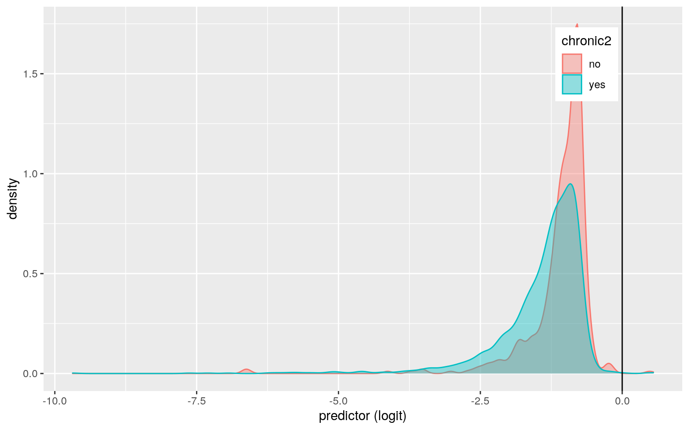
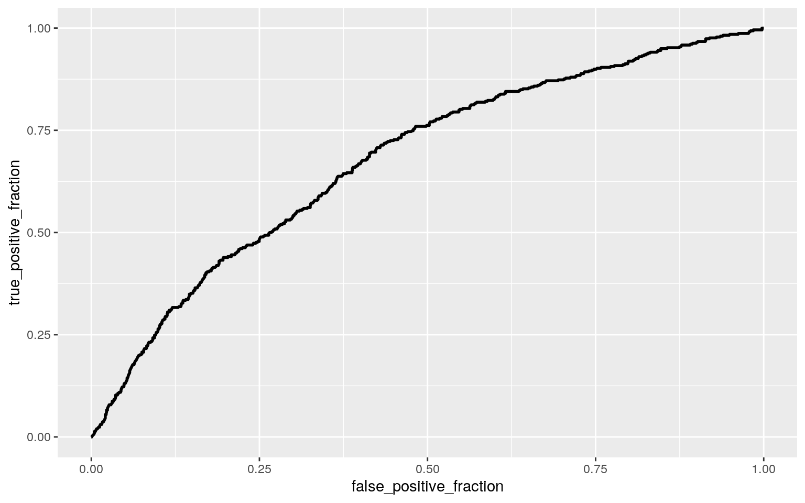

library(AER)
data("NMES1988")
library(tidyverse)
library(dplyr)
medical <- NMES1988 %>% slice(1:2000)Due to the size of the original dataset, I decided to cut down the number of observations from 4406 to 2000 in order to more easily explore the data. For this project, I chose to use the NMES1988 dataset as it deals with health data for individuals 66 years and older which is a topic that is very interesting to me as I want to work in health care. With this project, I really wanted to explore how certain variables affect the number of physician office visits for patients. The main variables I want to explore are how patient income, number of chronic health conditions, self-perceived health status, whether the patient was African-American, and number of physician office visits related to one another. Self-perceived health status is rated based on poor, average, or excellent, and income is based on family income in USD 10,000.
#MANOVA
manova(cbind(visits, nvisits, novisits, ovisits, emergency, hospital, chronic, income, age, school)~health,data=medical) -> man1
summary(man1)## Df Pillai approx F num Df den Df Pr(>F)
## health 2 0.18631 20.432 20 3978 < 2.2e-16 ***
## Residuals 1997
## ---
## Signif. codes: 0 '***' 0.001 '**' 0.01 '*' 0.05 '.' 0.1
' ' 1summary.aov(man1)## Response visits :
## Df Sum Sq Mean Sq F value Pr(>F)
## health 2 3361 1680.46 30.253 1.139e-13 ***
## Residuals 1997 110929 55.55
## ---
## Signif. codes: 0 '***' 0.001 '**' 0.01 '*' 0.05 '.' 0.1
' ' 1
##
## Response nvisits :
## Df Sum Sq Mean Sq F value Pr(>F)
## health 2 3 1.4203 0.0556 0.9459
## Residuals 1997 51018 25.5475
##
## Response novisits :
## Df Sum Sq Mean Sq F value Pr(>F)
## health 2 12.6 6.2875 0.6929 0.5002
## Residuals 1997 18120.8 9.0740
##
## Response ovisits :
## Df Sum Sq Mean Sq F value Pr(>F)
## health 2 148.6 74.303 9.073 0.0001195 ***
## Residuals 1997 16354.3 8.189
## ---
## Signif. codes: 0 '***' 0.001 '**' 0.01 '*' 0.05 '.' 0.1
' ' 1
##
## Response emergency :
## Df Sum Sq Mean Sq F value Pr(>F)
## health 2 35.05 17.5271 32.976 8.131e-15 ***
## Residuals 1997 1061.43 0.5315
## ---
## Signif. codes: 0 '***' 0.001 '**' 0.01 '*' 0.05 '.' 0.1
' ' 1
##
## Response hospital :
## Df Sum Sq Mean Sq F value Pr(>F)
## health 2 49.17 24.5836 50.383 < 2.2e-16 ***
## Residuals 1997 974.41 0.4879
## ---
## Signif. codes: 0 '***' 0.001 '**' 0.01 '*' 0.05 '.' 0.1
' ' 1
##
## Response chronic :
## Df Sum Sq Mean Sq F value Pr(>F)
## health 2 459.49 229.74 147.32 < 2.2e-16 ***
## Residuals 1997 3114.33 1.56
## ---
## Signif. codes: 0 '***' 0.001 '**' 0.01 '*' 0.05 '.' 0.1
' ' 1
##
## Response income :
## Df Sum Sq Mean Sq F value Pr(>F)
## health 2 191.2 95.620 11.154 1.523e-05 ***
## Residuals 1997 17119.3 8.573
## ---
## Signif. codes: 0 '***' 0.001 '**' 0.01 '*' 0.05 '.' 0.1
' ' 1
##
## Response age :
## Df Sum Sq Mean Sq F value Pr(>F)
## health 2 5.11 2.55588 6.4469 0.001619 **
## Residuals 1997 791.71 0.39645
## ---
## Signif. codes: 0 '***' 0.001 '**' 0.01 '*' 0.05 '.' 0.1
' ' 1
##
## Response school :
## Df Sum Sq Mean Sq F value Pr(>F)
## health 2 855.7 427.83 33.337 5.731e-15 ***
## Residuals 1997 25628.0 12.83
## ---
## Signif. codes: 0 '***' 0.001 '**' 0.01 '*' 0.05 '.' 0.1
' ' 1#For number of physician office visits
summary(aov(visits~health,data=medical))## Df Sum Sq Mean Sq F value Pr(>F)
## health 2 3361 1680.5 30.25 1.14e-13 ***
## Residuals 1997 110929 55.5
## ---
## Signif. codes: 0 '***' 0.001 '**' 0.01 '*' 0.05 '.' 0.1
' ' 1pairwise.t.test(medical$visits, medical$health, p.adj = "none")##
## Pairwise comparisons using t tests with pooled SD
##
## data: medical$visits and medical$health
##
## poor average
## average 6.7e-12 -
## excellent 1.4e-11 0.0048
##
## P value adjustment method: none#For number of physician hospital outpatient visits
summary(aov(ovisits~health,data=medical))## Df Sum Sq Mean Sq F value Pr(>F)
## health 2 149 74.30 9.073 0.00012 ***
## Residuals 1997 16354 8.19
## ---
## Signif. codes: 0 '***' 0.001 '**' 0.01 '*' 0.05 '.' 0.1
' ' 1pairwise.t.test(medical$ovisits, medical$health, p.adj = "none")##
## Pairwise comparisons using t tests with pooled SD
##
## data: medical$ovisits and medical$health
##
## poor average
## average 0.00014 -
## excellent 0.00023 0.14017
##
## P value adjustment method: none#For emergency room visits
summary(aov(emergency~health,data=medical))## Df Sum Sq Mean Sq F value Pr(>F)
## health 2 35.1 17.527 32.98 8.13e-15 ***
## Residuals 1997 1061.4 0.532
## ---
## Signif. codes: 0 '***' 0.001 '**' 0.01 '*' 0.05 '.' 0.1
' ' 1pairwise.t.test(medical$emergency, medical$health, p.adj = "none")##
## Pairwise comparisons using t tests with pooled SD
##
## data: medical$emergency and medical$health
##
## poor average
## average 8.3e-14 -
## excellent 2.5e-11 0.025
##
## P value adjustment method: none#For number of hospital stays
summary(aov(hospital~health,data=medical))## Df Sum Sq Mean Sq F value Pr(>F)
## health 2 49.2 24.584 50.38 <2e-16 ***
## Residuals 1997 974.4 0.488
## ---
## Signif. codes: 0 '***' 0.001 '**' 0.01 '*' 0.05 '.' 0.1
' ' 1pairwise.t.test(medical$hospital, medical$health, p.adj = "none")##
## Pairwise comparisons using t tests with pooled SD
##
## data: medical$hospital and medical$health
##
## poor average
## average <2e-16 -
## excellent <2e-16 7e-04
##
## P value adjustment method: none#For number of chronic conditions
summary(aov(chronic~health,data=medical))## Df Sum Sq Mean Sq F value Pr(>F)
## health 2 459.5 229.74 147.3 <2e-16 ***
## Residuals 1997 3114.3 1.56
## ---
## Signif. codes: 0 '***' 0.001 '**' 0.01 '*' 0.05 '.' 0.1
' ' 1pairwise.t.test(medical$chronic, medical$health, p.adj = "none")##
## Pairwise comparisons using t tests with pooled SD
##
## data: medical$chronic and medical$health
##
## poor average
## average < 2e-16 -
## excellent < 2e-16 3.7e-12
##
## P value adjustment method: none#For income
summary(aov(income~health,data=medical))## Df Sum Sq Mean Sq F value Pr(>F)
## health 2 191 95.62 11.15 1.52e-05 ***
## Residuals 1997 17119 8.57
## ---
## Signif. codes: 0 '***' 0.001 '**' 0.01 '*' 0.05 '.' 0.1
' ' 1pairwise.t.test(medical$income, medical$health, p.adj = "none")##
## Pairwise comparisons using t tests with pooled SD
##
## data: medical$income and medical$health
##
## poor average
## average 0.0127 -
## excellent 2.5e-06 0.0002
##
## P value adjustment method: none#For age
summary(aov(age~health,data=medical))## Df Sum Sq Mean Sq F value Pr(>F)
## health 2 5.1 2.5559 6.447 0.00162 **
## Residuals 1997 791.7 0.3965
## ---
## Signif. codes: 0 '***' 0.001 '**' 0.01 '*' 0.05 '.' 0.1
' ' 1pairwise.t.test(medical$age, medical$health, p.adj = "none")##
## Pairwise comparisons using t tests with pooled SD
##
## data: medical$age and medical$health
##
## poor average
## average 0.0021 -
## excellent 0.0012 0.1312
##
## P value adjustment method: none#For number of years of education
summary(aov(school~health,data=medical))## Df Sum Sq Mean Sq F value Pr(>F)
## health 2 856 427.8 33.34 5.73e-15 ***
## Residuals 1997 25628 12.8
## ---
## Signif. codes: 0 '***' 0.001 '**' 0.01 '*' 0.05 '.' 0.1
' ' 1pairwise.t.test(medical$school, medical$health, p.adj = "none")##
## Pairwise comparisons using t tests with pooled SD
##
## data: medical$school and medical$health
##
## poor average
## average 4.1e-15 -
## excellent 1.8e-09 0.25
##
## P value adjustment method: none#Type I Error
1 - (0.95)^33## [1] 0.8159741#Bonferroni adjusted
.05/33## [1] 0.001515152The MANOVA test indicated that all of the numeric variables except for the number of non-physician office visits and the number of non-physician hospital outpatient visits show a mean difference across levels of self-perceived health status. A total of 33 tests were performed. The probability that at least one error was made is 0.816 which is relatively high. The bonferroni adjusted significance level that should be used is 0.00152. The post hoc tests for the number of physician office visits and emergency room visits indicate differences for average and excellent health are no longer significant after the adjustment but were significant before. Additionally, for income and age, differences for poor and average health are no longer significant and for age, differences for poor and excellent health are also no longer significant but were before the adjustment. MANOVA assumes that dependent variables have multivariate normality and that for each dependent variable, there is homogeneity of within-group covariance matrices and equal covariance between any two dependent variables. It also assumes that there are linear relationships among dependent variables and no extreme univariate or multivariate outliers which are likely not met.
medical %>% group_by(afam) %>% summarize(means=mean(visits)) %>% summarize(`mean_diff`=diff(means))## # A tibble: 1 x 1
## mean_diff
## <dbl>
## 1 -1.66rand_dist<-vector()
for(i in 1:5000){
new <- data.frame(visits=sample(medical$visits),afam=medical$afam)
rand_dist[i]<-mean(new[new$afam=="yes",]$visits)-mean(new[new$afam=="no",]$visits)}
{hist(rand_dist,main="",ylab=""); abline(v = c(1.657962, -1.657962),col="blue")}
mean(rand_dist < -1.657962 | rand_dist > 1.657962) ## [1] 0.0022A mean difference randomization test was performed as the association between a categorical and numeric variable was explored. The null hypothesis is that mean physician office visits is the same for African-Americans and non African-Americans. The alternative hypothesis is that mean physician office visits is different for African-Americans and non African-Americans. The p-value generated from this randomization test is less than 0.05 indicating we reject the null hypothesis and there is a difference in mean visits for African-Americans and non African-Americans.
medical %>% mutate(income_c= income - mean(income,na.rm=T)) -> medical2
lm(visits~health*income_c, data=medical2) -> model1
summary(model1)##
## Call:
## lm(formula = visits ~ health * income_c, data =
medical2)
##
## Residuals:
## Min 1Q Median 3Q Max
## -9.464 -4.661 -1.750 2.132 79.980
##
## Coefficients:
## Estimate Std. Error t value Pr(>|t|)
## (Intercept) 5.73062 0.18647 30.732 < 2e-16 ***
## healthpoor 3.36156 0.50841 6.612 4.86e-11 ***
## healthexcellent -1.83223 0.67320 -2.722 0.00655 **
## income_c 0.03811 0.06357 0.599 0.54892
## healthpoor:income_c -0.21113 0.20285 -1.041 0.29809
## healthexcellent:income_c -0.04976 0.18401 -0.270 0.78686
## ---
## Signif. codes: 0 '***' 0.001 '**' 0.01 '*' 0.05 '.' 0.1
' ' 1
##
## Residual standard error: 7.456 on 1994 degrees of
freedom
## Multiple R-squared: 0.02998, Adjusted R-squared: 0.02754
## F-statistic: 12.32 on 5 and 1994 DF, p-value: 8.576e-12resids <- lm(visits~health*income_c,data=medical2)$residuals
ggplot()+geom_histogram(aes(resids),bins=20)
resids2 <- model1$residuals
fitvals<-model1$fitted.values
ggplot()+geom_point(aes(fitvals,resids2))+geom_hline(yintercept=0, color='red')
ggplot(medical2, aes(income_c, visits)) + geom_point()+geom_smooth(method="lm")
library(sandwich); library(lmtest)
bptest(model1)##
## studentized Breusch-Pagan test
##
## data: model1
## BP = 6.8928, df = 5, p-value = 0.2287coeftest(model1,vcov=vcovHC(model1))##
## t test of coefficients:
##
## Estimate Std. Error t value Pr(>|t|)
## (Intercept) 5.730623 0.177794 32.2318 < 2.2e-16 ***
## healthpoor 3.361557 0.637170 5.2758 1.466e-07 ***
## healthexcellent -1.832235 0.622683 -2.9425 0.003294 **
## income_c 0.038112 0.053009 0.7190 0.472248
## healthpoor:income_c -0.211131 0.200585 -1.0526 0.292662
## healthexcellent:income_c -0.049762 0.106379 -0.4678
0.639994
## ---
## Signif. codes: 0 '***' 0.001 '**' 0.01 '*' 0.05 '.' 0.1
' ' 1Predicted number of physician office visits for patients indicating average health status with 0 USD family income is 5.73. Income does not very strongly relate to office visits for patients with average health status as for every $10,000 increase in income (as income is measured in USD 10,000) patient office visits increase by 0.038 which is relatively small. When controlling for income ($0 USD), individuals with poor health are predicted to have 3.362 more office visits than those with average health and individuals with excellent health are predicted to have 1.832 fewer office visits than those with average health. The slope of income on office visits for patients with poor health is 0.211 smaller than that for patients with average health. The proportion of the variation in the outcome that the model explains is seen in the adjusted R-squared value which is 0.02754. Based on the histogram, it appears that the assumption of normality is not met. Based on the scatterplot, it vaguely appears that the assumption of linearity is met. Based on the last plot for the linear regression, it appears homoskedasticity is met as the points seem to fan out on the x-axis. The Breuch-Pagan test confirms that homoskedasticity is met as we fail to reject the null hypothesis of homoskedasticity based on the p-value of 0.2287. The t-values generally increased after robust SEs except for the healthpoor variable. The SE values only marginally changed. The p-values also only marginally changed indicating that the same results from before robust SEs remained significant and the conclusion did not change.
lm(visits~health*income_c, data=medical2) -> model1
boot_dat<- sample_frac(medical2, replace=T)
samp_distn <- replicate(5000, {
boot_dat <- sample_frac(medical2, replace=T)
fit1 <- lm(visits~health*income_c, data=boot_dat)
coef(fit1)
})
samp_distn %>% t %>% as.data.frame %>% summarize_all(sd)## (Intercept) healthpoor healthexcellent income_c
healthpoor:income_c healthexcellent:income_c
## 1 0.1764063 0.62542 0.6129546 0.05371179 0.1953405
0.1067007bootstrapped standard errors were calculated by resampling observations. Compared to the original normal-theory SEs, bootstrapped standard errors differ marginally. The bootstrapped SE for the intercept went down compared to the original, went up for the healthpoor and healthpoor:income_c variables and went down for the healthexcellent, income_c, and healthexcellent:income_c variables.
medical3 <- medical %>% mutate(y=ifelse(chronic=="0",1,0))
fit2 <-glm(y~visits+income, data=medical3, family=binomial(link="logit"))
coeftest(fit2)##
## z test of coefficients:
##
## Estimate Std. Error z value Pr(>|z|)
## (Intercept) -0.835187 0.087599 -9.5342 < 2.2e-16 ***
## visits -0.100843 0.012901 -7.8165 5.432e-15 ***
## income 0.041274 0.016932 2.4376 0.01479 *
## ---
## Signif. codes: 0 '***' 0.001 '**' 0.01 '*' 0.05 '.' 0.1
' ' 1exp(coef(fit2))## (Intercept) visits income
## 0.4337934 0.9040749 1.0421379prob2 <- predict(fit2,type="response")
pred <- ifelse(prob2 >.5,1,0)
table(prediction=pred, truth=medical3$y) %>% addmargins## truth
## prediction 0 1 Sum
## 0 1539 457 1996
## 1 3 1 4
## Sum 1542 458 2000(1539+1)/2000 #Accuracy## [1] 0.771539/1996 #Sensitivity ## [1] 0.77104211/4 #Specificity## [1] 0.251539/1542 #Precision## [1] 0.9980545medical3$logit<-predict(fit2,type="link")
newdata2 <- medical3 %>% mutate(chronic2= dplyr::recode(y, "1"="no", "0"="yes"))
newdata2 %>% ggplot() + geom_density(aes(logit,color=chronic2,fill=chronic2), alpha=.4)+
theme(legend.position=c(.85,.85))+geom_vline(xintercept=0)+xlab("predictor (logit)")
library(plotROC)
ggplot(medical3)+geom_roc(aes(d=y,m=prob2), n.cuts=0) -> roc
roc
calc_auc(roc)## PANEL group AUC
## 1 1 -1 0.6781954Each coefficient generated a significant result indicating that income and number of office visits are significant predictors of whether or not a patient has a chronic condition. Controlling for income, for every 1-unit increase in visits, the odds of whether a patient has a chronic condition changes by a factor of 0.9041. Controlling for visits, for every 1-unit increase in income, the odds of whether a patient has a chronic condition changes by a factor of 0.4338. Accuracy was calculated to be 0.77 indicating the proportion of correctly classified cases. Sensitivity is 0.771 indicating the proportion of patients without a chronic condition correctly classified. Specificity is 0.25 indicating the proportion of patients with a chronic condition correctly classified. This number is quite low which was surprising. Precision was calculated to be 0.998 which is the proportion of classified patients without a chronic condition who actually are without a chronic condition. This model of predicting whether a patient has a chronic condition from income and number of physician office visits independently is not effective as indicated by the poor AUC value of 0.678. The density plot generated indicates that left of 0, the gray area is the proportion of individuals without a chronic condition that were false negatives (i.e. did have a chronic condition) which appears to be relatively high.
class_diag<-function(probs,truth){
if(is.numeric(truth)==FALSE & is.logical(truth)==FALSE) truth<-as.numeric(truth)-1
tab<-table(factor(probs>.5,levels=c("FALSE","TRUE")),truth)
prediction<-ifelse(probs>.5,1,0)
acc=mean(truth==prediction)
sens=mean(prediction[truth==1]==1)
spec=mean(prediction[truth==0]==0)
ppv=mean(truth[prediction==1]==1)
f1=2*(sens*ppv)/(sens+ppv)
ord<-order(probs, decreasing=TRUE)
probs <- probs[ord]; truth <- truth[ord]
TPR=cumsum(truth)/max(1,sum(truth))
FPR=cumsum(!truth)/max(1,sum(!truth))
dup<-c(probs[-1]>=probs[-length(probs)], FALSE)
TPR<-c(0,TPR[!dup],1); FPR<-c(0,FPR[!dup],1)
n <- length(TPR)
auc<- sum( ((TPR[-1]+TPR[-n])/2) * (FPR[-1]-FPR[-n]) )
data.frame(acc,sens,spec,ppv,auc)
}
#In-sample classification diagnostics
library(tidyverse)
library(lmtest)
newmedical <- medical %>% mutate(chronic=ifelse(chronic=="0",1,0))
fit <- glm(chronic~(.)^2, data=newmedical, family="binomial")
prob <- predict(fit,type="response")
class_diag(prob,newmedical$chronic)## acc sens spec ppv auc
## 1 0.8105 0.3187773 0.9565499 0.685446 0.8270267#10-fold CV
set.seed(1234)
k=10
data <- newmedical %>% sample_frac
folds <- ntile(1:nrow(data),n=10)
diags<-NULL
for(i in 1:k){
train <- data[folds!=i,]
test <- data[folds==i,]
truth <- test$chronic
fit4 <- glm(chronic~(.)^2, data=train, family="binomial")
probs4 <- predict(fit4, newdata=test, type="response")
diags<-rbind(diags,class_diag(probs4,truth))
}
summarize_all(diags,mean)## acc sens spec ppv auc
## 1 0.7255 0.2191881 0.8802126 0.3564251 0.6486349#LASSO
library(glmnet)
y <- as.matrix(newmedical$chronic)
x <- model.matrix(chronic~.,data=newmedical)[,-1]
x <- scale(x)
cv<-cv.glmnet(x,y,family="binomial")
lasso<-glmnet(x,y,family="binomial",lambda=cv$lambda.1se)
coef(lasso)## 22 x 1 sparse Matrix of class "dgCMatrix"
## s0
## (Intercept) -1.317543858
## visits -0.326385815
## nvisits -0.030888552
## ovisits .
## novisits .
## emergency -0.007933546
## hospital .
## healthpoor -0.333126702
## healthexcellent 0.230190361
## adllimited -0.148850393
## regionnortheast .
## regionmidwest .
## regionwest .
## age -0.021775872
## afamyes .
## gendermale .
## marriedyes .
## school .
## income .
## employedyes 0.027316051
## insuranceyes .
## medicaidyes .#10-fold CV on LASSO variables
set.seed(1234)
k=10
data <- newmedical %>% sample_frac
folds <- ntile(1:nrow(data),n=10)
diags<-NULL
for(i in 1:k){
train <- data[folds!=i,]
test <- data[folds==i,]
truth <- test$chronic
fit5 <- glm(chronic~visits+nvisits+health+adl+age+employed,
data=train, family="binomial")
probs5 <- predict(fit5, newdata=test, type="response")
diags <- rbind(diags,class_diag(probs5,truth))
}
diags %>% summarize_all(mean)## acc sens spec ppv auc
## 1 0.781 0.1281928 0.9750413 0.6091608 0.7224447The in-sample classification diagnostics generated an Accuracy of 0.8105, Sensitivity of 0.3188, Specificity of 0.9565, Precision of 0.6854, and AUC of 0.827. This AUC value is relatively high indicating that this model is predicting whether a patient has a chronic condition accurately. The values for sensitivity and precision are quite low but the others are relatively high. The 10-fold CV produced very different average out-of-sample classification diagnostics. Accuracy was reduced to 0.7255, Sensitivity reduced to 0.2192, Specificity reduced to 0.8802, Precision significantly reduced to 0.3564, and AUC reduced to 0.6486. All in all, the AUC and diagnostic values indicate that this model is very bad at predicting whether a patient has a chronic condition on new data. Additionally, the drop in AUC from the original (generated from the in-sample metrics) indicates that there is over fitting and the model is too flexible. The LASSO results indicated that the variables of visits, nvisits, health, adl, age, and employed will make the best predictions on new data. The 10-fold CV using only the variables LASSO selected generated an AUC of 0.7224 which is notably lower than the original of 0.827. This drop in AUC indicates that this model cannot classify as well whether a patient has a chronic condition.